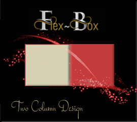
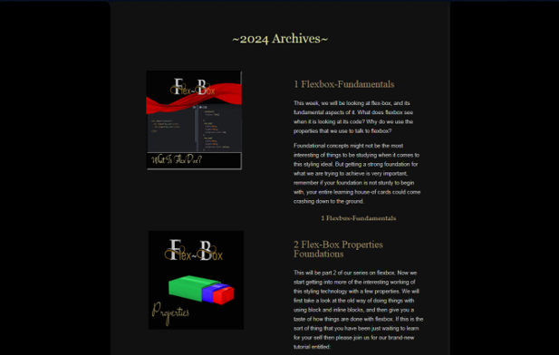
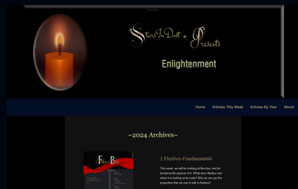
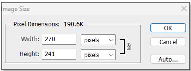
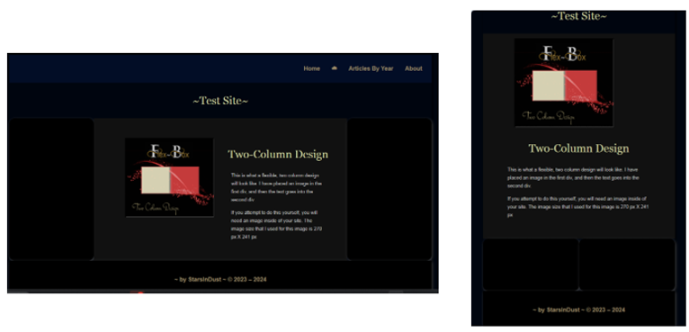
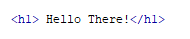
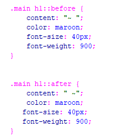
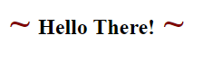
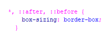

~7 Two-Column Design~
3/4/2024

This tutorial will be on how to make a two-column layout using flexbox. I use this design on my own website, in the presentation of my archived articles.

As you will see, this code will just be inserted into a pre-existing web layout.

Your image size for the first column

Remember, this 2- column section’s code will only be an insert to the main content on your own site. Your website will not resemble mine, except for the 2- column section.

Pseudo-Elements
Most of the code in this tutorial is fairly easy to understand, but the one thing that does stand out is the use of the pseudo-element, you can recognize the pseudo-element because you will see a double colon in the declaration of the class rule. So, I will go into an additional example here, before starting the actual tutorial.
The code using the pseudo-element with the double colon will put a tilde before and after the text that I have written below.
HTML

You will see from the CSS, that we have a tag of content, this is what we want to make appear before or after the text. I put a tilde in the tag, so when I run the webpage, I will see a tilde show up before and after the “Hello There!” text, even though it was never specified in the HTML, only in the CSS. We also styled the tilde in each one of the pseudo-element tags. It is just a piece of magic that we can do.
CSS

This is what this will look like with the styled tilde set to the rule::before and ::after

Why use this for Box-sizing?
The above is an explanation of Pseudo elements, and how they are used; however, you will see that in our code, it is being used on box-sizing. The star is used to say that they want this best practiced used on all of the elements, and even any pseudo-elements, the comma is used to separate the rules automatically with this code.
If you set the box -sizing to border-box as it was done here, both of our divs will include padding and boarder. Sometimes, you might put padding on one div and not on the other. This sort of thing could throw off the sizing, and one div could be wider than the other. If you set box-sizing to border-box, you do not have to keep track of such trivial matters, your code will do that for you, and make each div the same size regardless. This is a more uniform look for your layout.

There are other Pseudo-elements too, and if you want to learn more about them. You can go to W3schools Here.
You can go HERE to see our Code for our 2 column design insert.